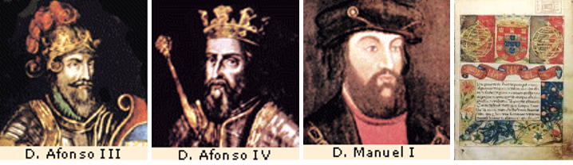

A região onde se encontra o concelho foi povoada desde tempos bastante antigos. Há vestígios arqueológicos um pouco por todo o lado, mas é de realçar, pela proximidade com Montemor-o-Velho, o povoado de Santa Olaia, que se situa junto ao cruzamento para a Ereira, e que foi profundamente estudado aquando das obras do troço do IP3. Este povoado foi ocupado desde o Neolítico até à Idade Média, com especial relevo para a época do Ferro (século VIII-VII a. C.), tendo mantido contactos comerciais com fenícios e cartagineses que aqui vinham em busca das riquezas mineiras e deixaram um vasto espólio que está patente no Museu Municipal da Figueira da Foz.
Num outeiro próximo existiu na Idade Média um castelo, que foi destruído por uma investida muçulmana em 1116. Voltando a Montemor-o-Velho, existem vestígios arqueológicos desde a época romana, nomeadamente os achados no sítio da Senhora do Desterro (existiu aí uma villa romana e uma necrópole, tendo sido postas a descoberto algumas sepulturas de tijolo, abobadadas, e moedas do século IV), a lápide de Lúcio Cádio Cela patente no Museu Nacional Machado de Castro em Coimbra, a lápide de Júpiter na Capela da Madalena e os blocos de cantaria reempregados na base da torre de menagem do castelo.
É possível que a povoação de Formoselha, situada na margem esquerda do rio, deva a sua origem a uma villa romana, entre as várias que terão existido ao longo do rio. Da época visigótica ficou uma pedra de ornáto bárbaro-popular, achada no castelo.

Em 711 iniciou-se a ocupação árabe da Península Ibérica. Montemor-o-Velho, porto fluvial-marítimo de grande importância na época, foi alvo de conquistas e reconquistas ao longo dos séculos IX a XII: em 848 dá-se a primeira reconquista cristã de Montemor pelo rei Ramiro I de Leão, que entregou o castelo ao abade João, tendo este resistido nesse mesmo ano ao cerco que lhe fez o califa de Córdova Abd-al-Rahaman. Em 878 Afonso III o Magno ocupou Coimbra procedendo ao repovoamento da linha do Mondego; em 2 de Dezembro de 990 dá-se nova investida dos árabes chefiados por Almançor, que tomam o castelo de Montemor-o-Velho, sendo o seu governo entregue a Froila Gonçalves, descendente do conde portucalense Gonçalo Moniz. Este foi desalojado, no reinado de Afonso V, por Mendo Luz, que o recuperou para os cristãos, passando mais tarde para Gonçalo Vieigas. Em 1026 os árabes voltam a conquistar Montemor-o-Velho, e em 1034 Gonçalo Trastamires recupera-a de novo para os cristãos, ficando seu governador.
Após novas investidas árabes, Fernando Magno, em 1064, conquista definitivamente Coimbra e a linha do Mondego, entregando o seu governo ao conde D. Sisnando, moçárabe natural de Tentúgal. D. Raimundo, governando pessoalmente Coimbra, deu carta de povoação a Montemor em Fevereiro de 1095. Nesta época o rio fazia a fronteira entre o norte cristão e o sul árabe, tendo sido construída uma linha de fortificações que incluía os castelos de Avô, no rio Alva, Penacova, Lousã, Coimbra, Penela, Soure e Montemor. Existe uma curiosa lenda popular sobre a origem de Montemor. Conta ela que profunda rivalidade opunha os habitantes de Montemor e Maiorca, pois cada qual considerava a sua terra como colocada no ponto mais alto que a outra. Para irritar os maiorquinos gritavam os de Montemor: "Monte…Mor! Monte…Mor!" ao que os de Maiorca retorquiam "Maior…Cá! Maior…Cá!".
O facto é que em 1212 se denominava Mons Maiores ou Montis Maioris, a que se acrescentou -o-Velho quando D. Sancho I reedificou a vila alentejana de Montemor(-o-Novo). Já no período da Nacionalidade, D. Sancho I deixou Montemor-o-Velho em testamento à filha, D. Teresa que, com a sua irmã D. Sancha, deram foral à povoação em Maio de 1212. Esta foi crescendo, acompanhando um surto demográfico por todo o Baixo Mondego, com o consequente desbravamento de novas terras para cultivo e criação de novos lugares, como se pode comprovar pela toponímia, que regista numerosos Casais e Póvoas. Para além dos senhorios régios, os terrenos do concelho distribuíam-se pelas principais instituições eclesiásticas da região (Mosteiro de Santa Cruz de Coimbra, Mosteiro de Santa Clara, Mosteiro do Lorvão).
O rei D. Afonso III doou a povoação a sua filha, D. Branca, abadessa de Huelgas e Lorvão. Foi na alcáçova do castelo que no dia 6 de Janeiro de 1355 o rei D. Afonso IV se reuniu com os seus conselheiros para decidirem a sorte de D. Inês de Castro, tendo daqui saído no D. Afonso IVdia seguinte para executarem o plano. Após o cerco de Torres Novas, o Mestre de Avis, D. João, passou por Montemor-o-Velho, onde recebeu as homenagens do alcaide-mor e do povo, tendo seguido para Coimbra onde foi aclamado rei pelas Cortes. D. João I concedeu o senhorio ao infante D. Pedro que aí fez estadia durante algum tempo. O rei D. João II, por testamento de 29 de Setembro de 1495, doou Coimbra como ducado ao filho natural, D. Jorge, incluindo-se na doação Montemor-o-Velho, que ficará na Casa dos Duques de Aveiro até 1759.
Em 20 de Agosto de 1516, D. Manuel I dá foral novo a Montemor-o-Velho; este documento é de particular importância para a análise da forma como se desenrolava a vida das gentes de Montemor nos inícios do século XVI. É também nesta época que se produz uma importante alteração na economia local devido à introdução nos campos do Mondego do milho maíz, trazido da América, e que provocou uma era de prosperidade que se manteve até ao século XVII. O desenvolvimento do concelho alicerça-se então em três núcleos populacionais: Montemor-o-Velho, Pereira e Tentúgal. Nos seus campos produz-se, para além do milho, o linho e o trigo, cria-se gado bovino e cavalar, constroem-se solares, remodelam-se igrejas e conventos. Deste período destacam-se as figuras de Diogo de Azambuja, Fernão Mendes Pinto e Jorge de Montemor.
A decadência parece ter começado nos inícios do século XVII e continuado no século XVIII; em 1771 a Figueira da Foz é elevada a vila e, consequentemente, o termo de Montemor é diminuído. Com a introdução da cultura do arroz nos inícios do século XIX, dá-se um novo surto desenvolvimentista. Com efeito, a produção não parará de aumentar, tornando-se uma das principais fontes de riqueza do concelho (em 1923 a produção em 466 ha foi de 700 000 Kg e em 1934 em 1 423 ha foi de 2 135 000 Kg).
Em 1826 o concelho era constituído pelas freguesias de Alfarelos, Brunhós, Carapinheira, Figueiró do Campo, Gatões, Gesteira, Granja do Ulmeiro, Liceia, Vila Nova da Barca, Alcáçova, S. Miguel, S. Salvador, S. Martinho e Madalena. Com a reestruturação administrativa de 1853, o concelho tomou a forma quase definitiva: foram extintos os concelhos de Verride, Santo Varão, Cadima e Tentúgal e integradas no concelho as freguesias de Arazede, Liceia, Pereira, Santo Varão, Reveles, Verride, Vila Nova da Barca, Meãs do Campo e Tentúgal. Em 1928 foi criada a freguesia da Abrunheira (por extinção de Reveles), em 1943 é a vez da criação da freguesia de Gatões (por desmembramento de Seixo de Gatões) e em 1984 é criada a freguesia da Ereira (por desmembramento de Verride).
Fontes:
INE, Recenseamento Geral da População e Habitação, 2001 (Resultados Definitivos)
Montemor-o-Velho um Município a Conhecer (CD-ROM Interactivo)
Augusto Santos Conceição - Terras de Montemor-o-Velho, 1944
Correia Góis - Montemor-o-Velho. A Terra e a Gente, 1995
Maria Helena Cruz Coelho - O Baixo Mondego nos Finais da Idade Média, 1983
Nelson Correia Borges - Coimbra e Região, 1987